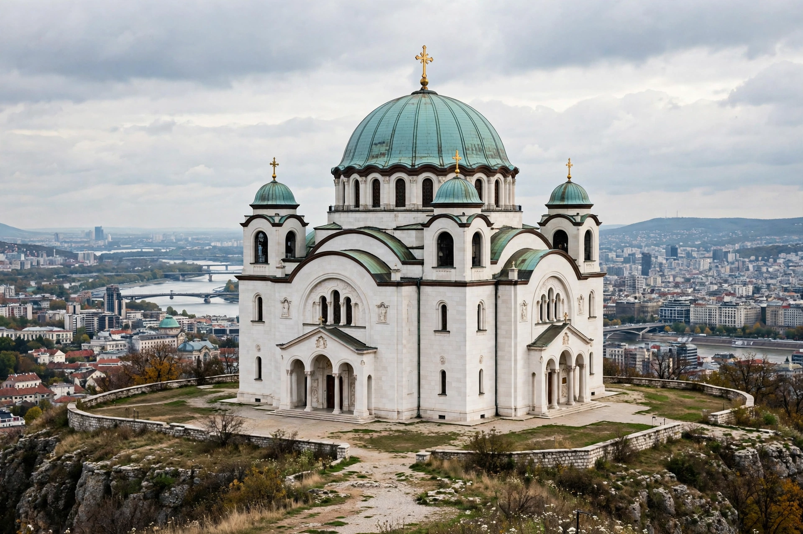

[Image placeholder: The Church of Saint Sava in Belgrade]The **Church of Saint Sava** (Serbian: Hram svetog Save) in Belgrade, Serbia, is one of the largest Orthodox churches in the world. Built on the Vračar plateau where, according to tradition, the Ottoman grand vizier Sinan Pasha burned the relics of Saint Sava — Serbia's first archbishop and national saint — in 1595, the church's great dome dominates the Belgrade skyline.
Construction began in 1935, was halted by war and communist rule, resumed in 1985, and the exterior was completed in 2004; interior decoration — including one of the largest mosaic programmes ever executed, with Russian funding and artists — continued into the 2020s. The church can hold around 10,000 worshippers and hosts Serbia's great feasts; beneath it lies a crypt church and treasury. It should not be confused with the small church of Saint Sava beside it or the medieval monasteries of the same name.
Designed in the Serbo-Byzantine style after Hagia Sophia's model (a central dome on pendentives over a Greek-cross plan), the church rises 79 m with its cross. Its white marble and granite facade and four conch apses make it visible across the city.